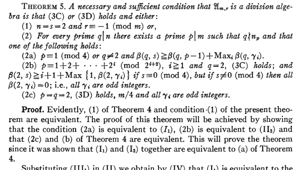
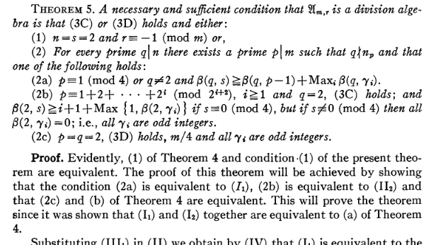

Random Arithmetic Lattices as Sphere Packings
Presentation by
Nihar P. Gargava
Doctoral student,
Chair of Number Theory,
Section of Mathematics,
École Polytechnique Fédérale de Lausanne
22nd March 2023
École de Printemps en Géométrie et Dynamique
What is a lattice packing?
\(\DeclareMathOperator{\R}{\mathbb{R}}\)\(\DeclareMathOperator{\Z}{\mathbb{Z}}\)\(\DeclareMathOperator{\C}{\mathbb{C}}\)\( \DeclareMathOperator{\F}{\mathbb{F}}\)Consider $\R^d$ with the standard inner product. A lattice $\Lambda\subseteq \R^d$ is a discrete subgroup such that the quotient space $\R^d / \Lambda$ has a finite induced volume.
Given a lattice $\Lambda$, choose $r > 0$ and consider the open balls $\{ B_{r}\left( v \right)\}_{v \in \Lambda}$ such for any $v_1, v_2 \in \Lambda$, $B_{r}(v_1) \cap B_{r}(v_2) \neq \emptyset \Rightarrow v_1 = v_2$.
Then $(\Lambda,r)$ is called a lattice sphere packing, or simply lattice packing inside $(\R^d, \langle \ , \ \rangle)$.
Packing density of a lattice packing is: \[ \lim_{R \rightarrow \infty} \frac{\mu\left( B_{R}(0) \cap \left( \bigsqcup_{v \in \Lambda} B_{r}(v) \right) \right)}{\mu\left( B_{R}(0) \right)} = \frac{\mu( B_{r}(0) )}{ \mu(\R^d / \Lambda)} \] It is always in the interval $[0,1]$.
Visualizing in $\R^2$
However, note that $2r$ can be at most $$m(\Lambda) = \min_{v \in \Lambda \setminus \{0\}} ||v|| ,$$ otherwise some balls will begin to intersect.
The goal is to maximize packing density. So take $r = \frac{1}{2}m(\Lambda)$. In that case packing density will be equal to $$\frac{\mu( B_{m(\Lambda)/2}(0) )}{ \mu(\R^d / \Lambda)},$$ and is independent of scaling.
To maximize this over all $\Lambda$, it is sufficient to maximize over unit covolume lattices (i.e. \(\mu(\R^d/\Lambda)\) = 1)
Visualizing in $\R^2$
So we somehow find \[ \sup_{\substack{\Lambda \subseteq \R^d \\ \mu(\R^d/\Lambda)=1}} \mu\left(B_{m(\Lambda)/2}(0) \right) \]
\[ = \sup_{ g \in SL_d(\R)} \frac{1}{2^d} \mu\left(B_{m(g \Z^d)}(0) \right) \]
which we use to define our dimensional constant $c_d$ \[ \colon= \frac{1}{2^d} c_d \]
Putting it together, we have \[ c_{d} = \sup\left\{ \mu\left( B_{r}(0)\right) \ | \ r> 0,\exists~g \in SL_d(\R) \text{ and } B_{r}(0) \cap g\Z^d = \{ 0\}\right\}. \]
Clearly, \(~c_d \in~[0,2^d]\), so supremum exists!
Visualizing in $\R^2$
What is known about $~c_d$?
The exact value of the constant $c_d$ is known only for $d = \{ 1,2,3,4,5,6,7,8,24\}$. For other $d$, we want to understand the asymptotic behaviour. In this talk, we will only focus on lower bounds.
Some asymptotic lower bounds for large dimensions
| Lower bound | Contribution of | Dimensions covered |
|---|---|---|
| $c_d \ge 1$ | Minkowksi-Hlawka (~1896-1940) | $\forall ~d \ge 2$ |
| $c_d \ge 2(d-1)$ | Ball (1992) | $\forall ~d \ge 1$ |
| $c_{4n} \ge 8.8n$ | Vance (2011) | $d=4n , n \ge 1$ |
| $c_{2\varphi(n)} \ge n$ | Venkatesh (2013) | $d=2\varphi(k)$ for some $k$ |
Since $\lim \inf \left( \frac{\varphi(n)}{n} \log \log n\right) = e^{- \gamma}$, the last bound is the best lower bound (among these, and overall) on $c_d$ in infinitely many dimensions. The first dimension where it outperforms all others in this list is $d=960$.
Explicit lattice constructions can help us only upto $d \le 300$.
(Ball, 1992) , the lower bound is as indicated.
(Vance, 2011) , using a probabilistic argument on lattices that lie in vector-space over quaternion division algebra. Works only when $4 \mid d$.
(Venkatesh, 2013) , using a probabilistic argument on lattices that lie in $(K \otimes_\mathbb{Q} \mathbb{R})^2$, $K$ is a cyclotomic field.
(G., 2022) , using a probabilistic argument on lattices that lie in $(D \otimes_\mathbb{Q} \mathbb{R})^2$, $D$ is a division algebra over $\mathbb{Q}$.
Comparison of bounds
Theorem
(G. 2022)Let $D$ be a finite-dimensional division algebra over $\mathbb{Q}$. Let $\mathcal{O} \subseteq D$ be an order in $D$ and $G_{0} \subseteq \mathcal{O}$ be a finite group embedded in the multiplicative group of $D$. Then if $d=2\dim_{\mathbb{Q}}D$, then \begin{align} c_{d} \ge \# G_{0}. \end{align}
To recover Venkatesh's result, set $D=\mathbb{Q}(\mu_n)$, $\mathcal{O} = \mathbb{Z}[\mu_n]$ and $G_0 = \langle \mu_n \rangle$. Hence, this gives \begin{align} c_{2 \varphi(n)} \ge n \end{align}
The cherrypicked sequence of Venkatesh achieves an asymptotic growth of $O( d \log \log d )$. This is achieved by setting $K$ as the $n$th cyclotomic field where $n=\prod_{p < N} p$.
The division algbera construction gives more freedom to cherrypick sequences. Instead of choosing a sequence of cyclotomic fields, we can now choose sequences of $\mathbb{Q}$-divison algebras. However, no such sequence will be able to give an asymptotic result strictly better than $O( d \log \log d )$. Improvements in individual dimensions is still possible, as shown before.
The probabilistic method
To show $c_d \ge K$, we must prove the existence of $g \in SL_d(\R)$ such that the origin centered ball $B$ with $\mu(B) = K$ has $g \Z^d \cap B = \{0\} $
This is an optimization problem on the space \[ X_d:= \{ \Lambda \subset \mathbb{R}^{d} | \ \mu(\mathbb{R}^{d} / \Lambda) = 1 \} = \{ g\Z^d \ | \ g \in SL_d(\R) \} \]
\[ \simeq SL_d(\mathbb{R})/SL_d(\mathbb{Z}). \]
A priori, this is a bijection of sets. But now we can pull back the topology and the measure from $SL_d(\R)/SL_d(\Z)$.
$SL_d(\R)$ has the topology of a locally compact group.
$SL_d(\R)$ is unimodular. $SL_d(\Z)$ is a discrete subgroup inside $SL_d(\R)$ and therefore there is a unique left $SL_d(\R)$-invariant measure on $SL_d(\R)/SL_d(\Z)$.
Proposition
There exists a unique (upto scaling) natural measure on $SL_d(\R)/SL_d(\Z)$, left-invariant under $SL_d(\R)$ action on cosets.
Furthermore, $SL_d(\mathbb{R})/SL_d(\mathbb{Z})$ under this has a bounded total measure.
This gives us a probability space. Hence we can talk about random unit covolume lattices.
Siegel transforms
Consider a bounded measurable function with compact support $f:\R^d \rightarrow \R$.
e.g. the indicator function of a ball.
With this, we can now construct the lattice-sum function $\Phi_f(\Lambda): X_d \rightarrow \R$, given as \[ \Phi_f(\Lambda) = \sum_{v \in \Lambda \setminus \{ 0\}}^{} f(v).\]
Since we can generate random lattices, we can talk about the expected value of $\Phi_f(\Lambda)$.
Let us try to do this experimentally! Let us sample over a set $S \subseteq X_d$ of lattices.
So we see that it is almost the integral.
Visualizing in $\R^2$
What we are empirically confirming is the following.
Theorem
(Siegel, 1945)Suppose $f:\mathbb{R}^{d} \rightarrow \mathbb{R}$ is a compactly supported bounded measurable function. Then, the following holds. \begin{align} \int_{X_d} \Phi_f = \int_{SL_d(\mathbb{R})/SL_d(\mathbb{Z})}^{} \left( \sum_{v \in g \mathbb{Z}^{d} \setminus \{ 0\}}^{}f(v) \right) dg = \int_{\mathbb{R}^{d}}^{} f(x) dx, \end{align} where the $dx$ on the right-hand side is the usual Lebesgue measure on $\mathbb{R}^{d}$ and $dg$ is the unique $SL_d(\mathbb{R})$-invariant probability measure on $SL_d(\mathbb{R})/SL_d(\mathbb{Z})$.
But as you saw that for any $\Lambda \in X_d$, when $f$ is the indicator of a ball, we must have $\Phi_f(\Lambda) \in \{0,2,4,6,...\}$. That's because balls are symmetric. $$v \in \text{supp}(f) \cap ( \Lambda \setminus \{0 \}) \Rightarrow -v \in \text{supp}(f) \cap ( \Lambda \setminus \{0 \}).$$
If $f$ is the indicator function of a ball of volume $2- \varepsilon$, then this tells us that for any dimension $d$ $$\int_{X_d} \Phi_f = 2 - \varepsilon$$
Conclusion: There exists some lattice $\Lambda \in X_d$ such that $\Phi_f(\Lambda) = 0$. That is, there is some lattice of unit covolume that intersects trivially with an origin centered ball of volume $ 2 - \varepsilon$.
Another conclusion: $c_d \ge 2$ for all dimensions $d$!
Both Venkatesh and the division algebra lattices use this idea. What we want is to find expectation of the lattice sum over a smaller subset of lattices that have a larger group of symmetries.
For Venkatesh, the group of symmetries is always a cyclic group. For the new result, the symmetries are non-commutative.
Venkatesh's lower bound
The idea is to take a nice enough subcollection $Y_d \subseteq X_d$ of lattices and average the lattice-sum function $\Phi_f$ over them.
Define the set $Y_d$ as $$Y_d = \left\{ \left[ \begin{smallmatrix} a & b \\ c & d \end{smallmatrix}\right] \mathcal{O}_K^2 \ | \ a,b,c,d \in K_{\R} = K\otimes \R , ad-bc =1_{K_{\R}} \right\}.$$
In conventional notation, this is just $$Y_d = \{ g ( \mathcal{O}_K^{\oplus 2} ) \ | \ g \in SL_2(K_{\R}) \} \simeq SL_2(K_\mathbb{R} ) /SL_2(\mathcal{O}_K). $$
$Y_d$ can be given probability measure.
So if $f$ is the indicator function of an origin-centered ball with respect to a quadratic form that is invariant under $\langle \mu_n \rangle$, we have that $\Phi_f(\Lambda) \in \{0,n,2n,3n,4n,\ldots\}$ for $\Lambda \in Y_d$. Such a quadratic form always exists by averaging!
Venkatesh, then proves the following analogue of Siegel's theorem.
Theorem
(Venkatesh 2013)Let $d = 2\varphi(n)$ Suppose $f:K_{\mathbb{R}}^2 \rightarrow \mathbb{R}$ is a compactly supported bounded measurable function. Then, the following holds. \begin{align} \int_{Y_d} \Phi_f = \int_{SL_2(K_\mathbb{R})/SL_2(\mathcal{O}_K)}^{} \left( \sum_{v \in g \mathcal{O}_K^{\oplus 2} \setminus \{ 0\}}^{}f(v) \right) dg = \int_{\mathbb{R}^{d}}^{} f(x) dx, \end{align} where the $dx$ on the right-hand side is that lebesgue measure on $\mathbb{R}^{d}$ that makes $\mathcal{O}_K^{\oplus 2}$ of unit covolume and $dg$ is the unique $SL_2(K_\mathbb{R})$-invariant probability measure on $Y_d$.
Conclusion: By setting $f$ as the indicator function of a ball in a suitable quadratic form, we conclude that there exists some lattice $\Lambda \in Y_d$ such that $\Phi_f(\Lambda) = 0$. That is, there is some lattice of unit covolume that intersects trivially with an origin centered ball of volume $ n - \varepsilon$.
Another conclusion: $c_{2 \varphi(n)} \ge n$ for all $n$!
Towards division algebra
The division algebra case is also very similar.
Let $D$ be a finite-dimensional division algebra over $\mathbb{Q}$. Let $\mathcal{O} \subseteq D$ be an order in $D$. We work in $d = 2 \dim_{\mathbb{Q}} D$ dimensions. Define $D_{\R}= D \otimes_\mathbb{Q} \R$.
$$Y_d = \{ g ( \mathcal{O}^{\oplus 2} ) \ | \ g \in SL_2(D_{\R}) \} \simeq SL_2(D_\mathbb{R} ) /SL_2(\mathcal{O}). $$
Here
$$ SL_2(D_{\R}) = \left\{ \left[ \begin{matrix} a & b \\ c & d \end{matrix}\right] \ | \ \left[ \begin{matrix} x \\ y \end{matrix}\right] \mapsto \left[ \begin{matrix} ax + by \\ cx + dy \end{matrix}\right] \text{ is a measure preserving map on } D_{\R}^{\oplus 2} \right\}$$
$Y_d$ consists of lattices that are invariant under diagonal right-multiplication by units in $\mathcal{O}$ $$ g ( \mathcal{O}^{\oplus 2} ) = g ( \mathcal{O}^{\oplus 2} ) \left[ \begin{matrix} \mu & 0 \\ 0 & \mu \end{matrix}\right] , \text{ for any } \mu \in \mathcal{O}^{*} $$
Theorem
Let $d = 2 [D:\mathbb{Q}]$. Suppose $f:D_{\mathbb{R}}^2 \rightarrow \mathbb{R}$ is a compactly supported bounded measurable function. Then, the following holds. \begin{align} \int_{Y_d} \Phi_f = \int_{SL_2(D_\mathbb{R})/SL_2(\mathcal{O})}^{} \left( \sum_{v \in g \mathcal{O}^{\oplus 2} \setminus \{ 0\}}^{}f(v) \right) dg = \int_{\mathbb{R}^{d}}^{} f(x) dx, \end{align} where the $dx$ on the right-hand side is that Lebesgue measure on $\mathbb{R}^{d}$ that makes $\mathcal{O}^{\oplus 2}$ of unit covolume and $dg$ is the unique $SL_2(D_\mathbb{R})$-invariant probability measure on $Y_d$.
To get packing bounds, fix a finite subgroup $G_0 \subseteq \mathcal{O}^*$ to act diagonally on the right of $\mathcal{O}^{\oplus 2}$. We get the bounds $$c_{2 \dim_{\mathbb{Q}} D} \ge \# G_0.$$
In fact we only need to find finite subgroups that live in $\mathbb{Q}$-division algebras. The order $\mathcal{O}$ can be aligned according to the finite group. Fortunately, there exists a complete classification of such finite subgroups due to Amitsur, 1955.
 

For brewity, we will not discuss classification of of finite subgroups of division rings.
More general spaces of lattices
What about other homogeneous spaces of lattices? All of the above integral formulas were on spaces $\mathcal{G}(\mathbb{R})/ \Gamma$ for some algebraic $\mathbb{Q}$-group $\mathcal{G}$ and an arithmetic subgroup $\Gamma$.
If the group $\mathcal{G}$ is semisimple, we are automatically guaranteed that $\mathcal{G}(\mathbb{R})/ \Gamma$ will be a probability space under the natural left $\mathcal{G}(\mathbb{R})$-invariant Haar measure
Theorem
(Borel, Harish-Chandra, 1962)Let $\mathcal{G}\subseteq SL_n(\C)$ be an algebraic group defined over $\mathbb{Q}$. Then $\mathcal{G}_{\mathbb{R}}/\mathcal{G}_{\mathbb{Z}}$ has a finite invariant measure if any only if $X_{\mathbb{Q}}(\mathcal{G}^{0}) = \{ e\}$, where $\mathcal{G}^{0} \subseteq \mathcal{G}$ is the connected component of identity in the Zariski topology. That is to say, there are no non-trivial $\mathbb{Q}$-characters of $\mathcal{G}^{0}$.
Arithmetic subgroups in algebraic groups
| Contribution of | Algebraic group | Arithmetic group | Lower bound |
|---|---|---|---|
| Siegel (1945) | $SL_d(\mathbb{R})$ | $SL_d(\mathbb{Z})$ | $c_d \ge 2$ |
| Rogers (1947) | $SL_d(\mathbb{R})$ | $SL_d(\mathbb{Z})$ | $c_{t} \ge 2 \tfrac{t}{e}$ |
| Vance (2011) | $SL_t(\mathbb{H})$ | $SL_t(\mathcal{O})$,
$\mathcal{O}=$ Hurwitz-Integers |
$c_{4t} \ge 24 \tfrac{t}{e} $ |
| Venkatesh (2013) | $SL_2(K_\mathbb{R})$
$K= \mathbb{Q}(\sqrt[n]{1})$ |
$SL_2(\mathcal{O})$,
$\mathcal{O}=$ Integers |
$c_{2\varphi(n)} \ge n$ |
| G. (2022) | $SL_2(D_\mathbb{R})$
$D=$ division ring containing finite group $G_0$ |
$SL_2(\mathcal{O})$,
$\mathcal{O}=$ order in $D$ |
$c_{2\dim(D)} \ge \# G_0$ |
| G.-Serban (2022) | $SL_t(D_\mathbb{R})$
$D=$ division ring containing finite group $G_0$ |
$SL_t(\mathcal{O})$,
$\mathcal{O}=$ order in $D$ |
$c_{t\dim(D)} \ge \# G_0 \tfrac{t}{e} $ |
André Weil discussed a much more general formula in 1965.
His formula is an an "adelic" setting, but let us try to interpret it for our use.
- Let $\pi :\mathcal{G} \rightarrow GL(V)$ be a $\mathbb{Q}$-representation of a semisimple $\mathbb{Q}$-algebraic group.
- Let $\Lambda \subseteq V_\mathbb{Q}$ be a maximal-rank base lattice on which the group will act to randomize it.
- Let $\Gamma \subseteq \mathcal{G}(\mathbb{Q}) = \{ g \in \mathcal{G}(\mathbb{Q}) \ | \ g \Lambda = \Lambda\}$
- Let $f:V_\mathbb{R} \to \mathbb{R}$ be a test function.
Then assuming that the left side below converges absolutely, Weil's formula is \[ \DeclareMathOperator{\vol}{vol} \int_{\mathcal{G}(\mathbb{R})/\Gamma} \left( \sum_{v \in g\Lambda} f(v) \right) dg = \sum_{ \Gamma w \in \Gamma \backslash \Lambda } \vol\left( \mathcal{G}_w(\mathbb{R})/\Gamma_w \right) \int_{ g \in \mathcal{G}(\mathbb{R}) / \mathcal{G}_{w}(\mathbb{R})} f(gx)dg, \] where \begin{align} \mathcal{G}_w(\mathbb{Q}) & = \{ g \in \mathcal{G}(\mathbb{Q}) \ | \ gw = w\}, \\ \Gamma & = \{ g \in \Gamma \ | \ gw = w\}, \end{align}
Weil also gives some sufficient conditions for when the left-hand side will exist. However, at this level of abstraction this is a bit difficult to handle.
But observe that in the innermost term, we are just integrating $f$ along an orbit $\mathcal{G}(\mathbb{R}) w$ and then summing up over lattice orbits. This is all we need to start computing!
Higher moment formula
Let us work with one very concrete example in this framework. Suppose we want to computer higher moments of our Siegel transforms in the most classical case. That is, we want to evaluate for some $n \ge 2$ \begin{equation} \int_{SL_d(\mathbb{R})/SL_d(\mathbb{Z})} \left( \sum_{v \in g \mathbb{Z}^{d} } f(v) \right)^{n} dg = \int_{SL_d(\mathbb{R})/SL_d(\mathbb{Z})} \left( \sum_{ (v_1,v_2,\dots,v_n) \in (g \mathbb{Z}^{d})^{n} } f(v_1) f(v_2) \dots f(v_n) \right) dg \end{equation}
For this, we can use Weil's setup as follows:
- $ \pi : SL_d \rightarrow GL_{d \times n }$ is the diagonal action on $(\mathbb{Q}^{d})^{\oplus n}$,
- $(\mathbb{Z}^{d} )^{n } \subseteq \mathbb{R}^{d \times n } $ is the base lattice,
- $SL_d(\mathbb{Z})$ stabilizes $\mathbb{Z}^{d \times n }$ under the left action (or equiv. diagonal action on $(\mathbb{Z}^d)^{\oplus n}$),
- Test function is $g : \mathbb{R}^{d \times n } \rightarrow \mathbb{R}$ as $g = f^{\otimes n }$.
Then, we get \begin{equation} \int_{SL_d(\mathbb{R})/SL_d(\mathbb{Z})} \left( \sum_{v \in g \mathbb{Z}^{d} } f(v) \right)^{n} dg = \sum_{ \text{orbit}~w\in SL_d(\mathbb{Z}) \backslash \mathbb{Z}^{d \times n }} \cdots \end{equation}
But then what are the orbits of $SL_d(\mathbb{Z})$ action on $\mathbb{Z}^{d \times n}$? Let us work this out for $n < d$.
Let $\alpha_1, \alpha_2 ,\dots, \alpha_n \in \mathbb{Q}^{n}$. Then for $v_1, v_2 ,\dots,v_n \in \mathbb{Z}^{d}$ and $g \in SL_d(\mathbb{Z})$, we have \begin{align} \alpha_1 v_1 + \alpha_2 v_2 + \dots + \alpha_n v_n = 0 \Rightarrow \alpha_1 g v_1 + \alpha_2 g v_2 + \dots \alpha_n g v_n = 0. \end{align}
If $v_1,\dots,v_n$ span an $m$-dimensional space, they will have $n-m$ linear dependencies. These linear dependence coeffiencients $(\alpha_1, \alpha_2,\dots, \alpha_n) $ span an $(n-m)$-dimensional space in $\mathbb{Q}^{n}$.
This almost determines all the orbits. For $n < d$, the orbits of $SL_d(\mathbb{Z})$ action on $(\mathbb{Z}^{d} \setminus \{0\})^{n}$ are in bijection with subpaces of $\mathbb{Q}^{n}$.
We are now ready to state a higher moment formula due to Rogers (1966).
For any $\mathbb{Q}$-subspace $ S \subseteq \mathbb{Q}^{n}$, we can define a height $H(S) $ as \begin{equation} H(S) = \vol\left( \frac{S \otimes_\mathbb{Q} \mathbb{R}}{ S \cap \mathbb{Z}^{n}} \right), \end{equation} the volume taken with respect to natural measure for subpaces of $\mathbb{R}^{n}$.
Theorem
(Rogers, 1966)For $n < d$, the higher moment converges absolutely and is equal to the following \begin{align} \int_{SL_d(\mathbb{R})/SL_d(\mathbb{Z})} \left(\sum_{v \in g\mathbb{Z}^{d} \setminus \{0\} } f(v)\right)^{n} = \sum_{\text{subspaces}~S \subseteq \mathbb{Q}^{n}} \frac{1}{H(S)^{t}} \int_{S^{\perp}(\mathbb{R})} f^{\otimes n}(v) dv, \end{align} where \begin{equation} S^{\perp}(\mathbb{R}) = \{ (v_1,v_2,\dots,v_n) \in (\mathbb{R}^{d})^{n } \ | \ \sum \alpha_i v_i = 0~\text{for each}~(\alpha_1,\dots,\alpha_n) \in S\}. \end{equation} and the integral is with respect to the natural measure on it as a subspace in $\mathbb{R}^{d \times n}$.
Why is it a finite number?
Theorem
(Schmidt, 1967)Let $m < n$ and let $G(m,n)$ be the set of $m$-dimensional subspaces of $\mathbb{Q}^n$. Then \begin{equation} \# \{ S \in G(m,n) \ | \ H(S) \le T \} \asymp T^{n} \end{equation}
The formula basically writes the higher moment as a "height zeta function" value. In fact the fact that the right hand side exists is the equivalent to saying that the height zeta functions on Grassmannian varieties absolutely converge at special values.
Knowing higher moments of Siegel gives more information about random lattices!
When $n \ll d$, the higher moments start behaving like moments of a Poisson distribution.
Rogers used this to prove that \begin{equation} c_d \ge \tfrac{1}{3}\sqrt{d}. \end{equation}
But he had already obtained in 1947 \begin{equation} c_d \ge d \cdot ( 2e^{-1} ), \end{equation} using just the first moment!
This is because the first moment gives a much simpler expression. Indeed, $SL_d(\mathbb{Z}) \in \mathbb{Z}^{d}$ has only two orbits (and not infinitely many!).
So what is the future of random lattices?
Hopefully, we will discover better ways to handle these higher moment formulae without having to approximate them.
Or perhaps we will be able to find better algebraic groups for which the integration formulas are more tractable.
The quest to improve lower bounds on sphere packing goes on!
Thank you for your attention!
Email:
nihar.gargava@epfl.ch
Based on arXiv preprints:
2107.04844, 2111.03684
Slides:
nihargargava.com/lille_seminar
How does it work?:
This presentation and all the animations are written in html and javascript using reveal.js and d3.js.
Feel free to contact for questions/comments.
Appendix: How to generate random 2-dimensional lattices
To the map $\psi:[\pi/3,2\pi/3]\times ]0,1] \rightarrow \mathbb{H}$
given by $\psi(a,b) = \cos(a) + i \sin(a)/b$ is a measure preserving map!
It maps the rectangle bijectively to a fundamental domain of $\mathbb{H}/SL_2(\mathbb{Z})$.
Using this, the following map randomly generates a lattice.
\[ \psi_1: [0,2\pi]\times [\pi/3,2\pi/3] \times ] 0,1] \to SL_2(\mathbb{R})\\
\psi_1(x,y,z) = \left[ \begin{smallmatrix} 1 & \cos(y) \\ 0 & 1 \end{smallmatrix} \right] \left[ \begin{smallmatrix} \left(\frac{\sin(y)}{z}\right)^{\frac{1}{2}} & 0 \\ 0 & \left({\frac{\sin(y)}{z}}\right)^{-\frac{1}{2}} \end{smallmatrix} \right] \left[ \begin{smallmatrix} \cos(x) & \sin(x) \\ -\sin(x) & \cos(x) \end{smallmatrix} \right]
\]
This only works for $d=2$. It is not known how to generalize this to higher dimensions!